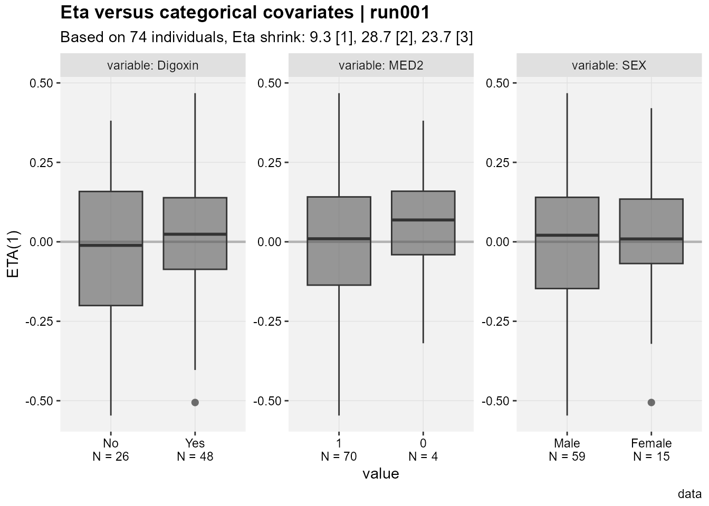
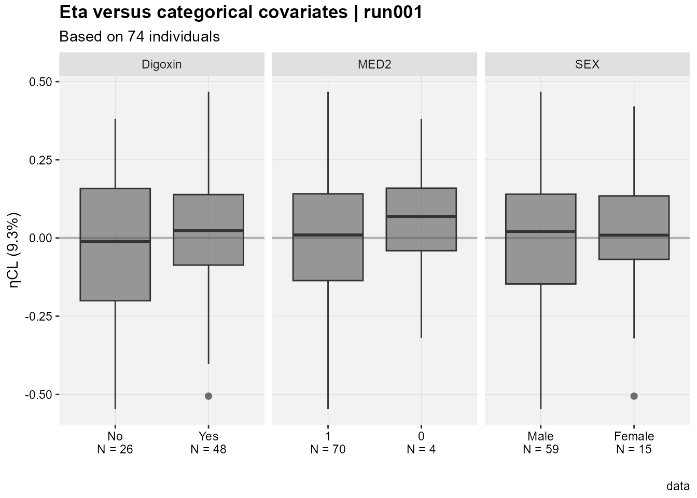
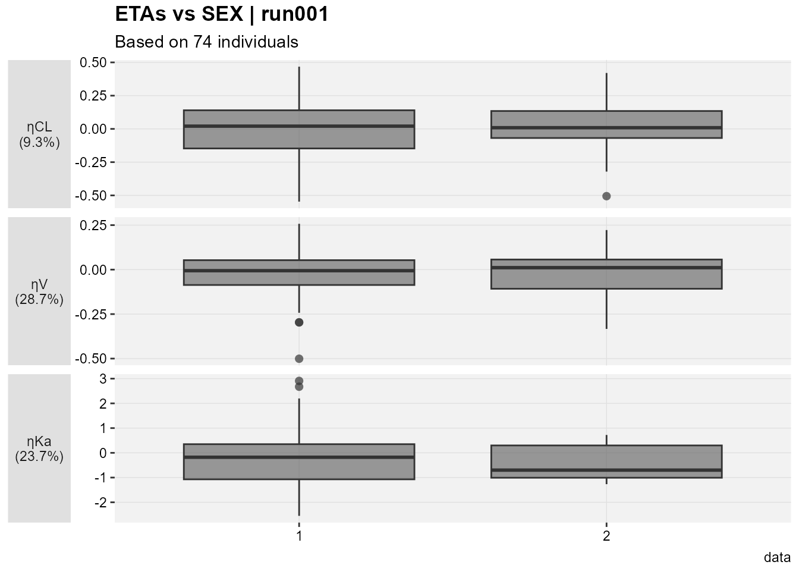
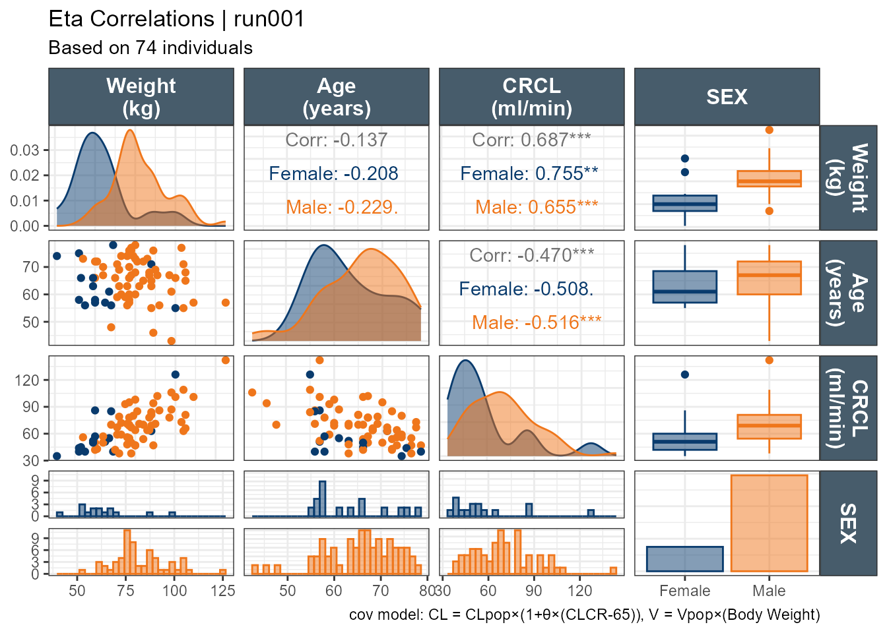

In pharmacometrics analyses, it is common to plot the pharmacokinetic model parameters such as Clearance (CL) and Volume of distribution (Vd) versus continuous covariates such as Body Weight and Age and versus categorical covariates such as Sex, Race and renal function category. We will be using an example database that ships with the xpose.xtras package and explore out of the box available solutions and provide an alternative using custom functions plugged into the GGally’s package function ggduo.
The Eta versus continuous covariates plot shows ETA(1) which is the random effect number one versus the values of the covariates shown in the facet strip of each panel. The run number, number of subjects, eta shrinkages for all eta not just ETA(1) are provided in the title and subtitle, as well as a caption “data”. The xpose.xtras pacakge also support labeling/units of the variable to make the plots more legible yet we still don’t know what ETA(1) refers to.
Code
eta_vs_catcov(xpdb_x,etavar=ETA1, quiet=TRUE)

A nice touch seen in the Eta versus categorical covriates plot is that out of the box we have the N by category shown on the x axis.
Accessing the database code we can see that ETA(1) is ETACL, ETA2 is ETAV and ETA3 is ETAKA. Since this is based on ggplot2 one can easily modify the generated plots. Here I use facet_grid to have one common y axis. I also put the shrinkage on the y axis title.
Code
eta_vs_catcov(xpdb_x,etavar=c(ETA1), quiet=TRUE)+facet_grid(~variable,scales="free_x")+labs(x="",y=paste0("ηCL (",get_shk(xpdb_x)[1],"%)"),subtitle="Based on @nind individuals")

I still cannot generate one plot for multiple etas nor can I combine categorical and continuous covariates, let alone if I want to color by one important categorical covariate. let us try Certara.Xpose.NLME's eta_vs_cov This function plot all eta’s versus the specified categorical or continuous covariate.
Code
etalables <-c(`ETA(1)`=paste0("ηCL\n(",get_shk(xpdb_x)[1],"%)"),`ETA(2)`=paste0("ηV\n(",get_shk(xpdb_x)[2],"%)"),`ETA(3)`=paste0("ηKa\n(",get_shk(xpdb_x)[3],"%)"))eta_vs_cov(xpdb_x,covariate=c("SEX"))+facet_grid(variable~.,scales="free",switch="y",labeller =labeller(variable=etalables))+labs(x="",y="",subtitle="Based on @nind individuals")+theme(strip.placement ="outside",axis.title.x =element_blank(),axis.title.y.left =element_blank(),strip.text.y.left =element_text(angle=0))

I still feel limited and not able to really look at everything as a whole. While I can try patchwork, I wanted to explore using ggduo which enables combining continuous and categorical covariates side by side. In this example, all categorical covariates have two levels. However, when the number of categories varies (e.g. Race with four categories) care should be taken on reserving space proportional to the number of the levels. To use ggduo we will use the raw table outputs and add a new categorical covariate combining MED1 and MED2 which will have levels: Both meds, MED2 only or none. ggduo allows the user to provide mapping = aes(color = SEX, fill = SEX) to color by any categorical covariate we want.
This is an improvement, where we can look at all ηs, all the covariates we want, and all the important info added. We can then wrap the code into a function to select a subset of the ηs and covariates.
It is straightforward, for ggplot2 users to modify the underlying panel functions that are used by GGally::ggduo an example is shown below where I smooth_with_hline is based on ggally_smooth adding and ggplot2 code to add a horizontal line and control its color via the hlinecolor argument.
smooth_with_hline <-function(data, mapping, method="loess", hlinecolor="red", ...) { x <-eval_data_col(data, mapping$x) y <-eval_data_col(data, mapping$y)ggally_smooth(data, mapping,method = method, ...) +geom_hline(color=hlinecolor,data =data.frame(y =0),mapping =aes(yintercept = y),inherit.aes =FALSE )}# how it is used in GGally #wrap(smooth_with_hline,hlinecolor="blue",se=FALSE,# col="gray40",span = 0.9,alpha=0.5)
Where are the p-values. I did not add p-values on purpose. Those wanting p-values can edit the function as they see fit. I don’t think it is appropriate to sprinkle p-values left and right and make decision on non-specified tests. As a bonus, I will leave you with a pairs plots using default ggpairs with p-values for the correlations.
Code
ggpairs(xpdb_xdata,mapping =aes(color = SEX, fill = SEX),columns =c("WT","AGE","CLCR","SEX"),columnLabels =c("Weight\n(kg)","Age\n(years)", "CRCL\n(ml/min)","SEX"), )+theme_bw()+theme(strip.background = ggplot2::element_rect(fill ="#475c6b"), strip.text = ggplot2::element_text(face ="bold", color ="white",size =12))+labs(title ="Eta Correlations | run001",subtitle ="Based on 74 individuals",caption ="cov model: CL = CLpop×(1+θ×(CLCR-65)), V = Vpop×(Body Weight)")+scale_color_manual(values=c("#093B6D", "#EF761B"))+scale_fill_manual(values=alpha(c("#093B6D", "#EF761B"),0.5))

And with custom functions highlighting the panel if it is significant: